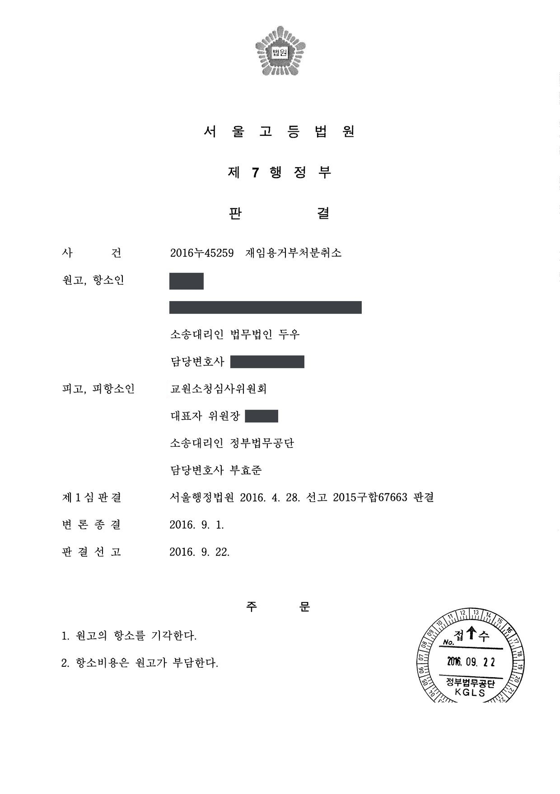

대학교수 재임용거부처분 취소결정 관련 소송 (1·2심)
서울행정법원 2015구합67663 · 서울고등법원 2016누45259 · 담당변호사 부효준
판결문


사건의 요지
교원업적평가 점수 미달을 이유로 한 재임용 거부에 대한 교원소청심사 결정에 불복한 사건으로, 재임용 심사 기준의 합리성과 절차의 적법성이 다투어졌습니다.
사건의 주요 내용
사립대학 교원인 원고는 2009년 3월부터 2015년 2월까지 기간을 정하여 임용되었는데, 학교법인은 2014년 12월 '직전 임용기간 동안의 교원업적평가 누적 점수가 8등급 이상이고 영역별 최저 업적 점수를 충족하여야 한다'는 교원업적평가규정 제14조 제2항을 충족하지 못하였다는 이유로 재임용을 거부하였습니다. 원고의 누적 점수는 100점 만점에 57.59점으로 기준 등급에 미치지 못하였고, 연구영역 점수 합계는 31점으로 최저기준 48점에 미달하였습니다.
원고는 교원소청심사위원회에 소청심사를 청구하였으나 2015년 3월 받아들여지지 않았고, 위원회를 피고로 하여 결정의 취소를 구하는 소송을 제기하였습니다. 1심에서 청구가 받아들여지지 않자 원고가 항소하였으나, 항소심은 2016년 9월 1심 판결의 이유를 그대로 인용하여 항소를 받아들이지 않았습니다. 부효준 변호사는 1심과 항소심에서 피고 소청심사위원회를 대리하였습니다.
쟁점
- 학교가 과거 재임용 심사에서 업적평가 기준을 느슨하게 적용해 온 관행이 신뢰보호의 근거가 되는지
- 규정상 매년 실시하여야 하는 업적평가를 재임용 심사 때 한꺼번에 실시한 하자가 재임용 거부의 효력에 영향을 미치는지
- 전과·폐과 등의 사정을 고려할 때 연구영역 점수 미달을 이유로 한 재임용 거부가 재량권을 일탈·남용한 것인지
원고의 주장
- 학교법인은 2011년도 이전의 재임용 심사에서는 교원업적평가규정 제14조 제2항을 적용하지 않다가 아무런 사전고지 없이 이 규정을 근거로 재임용을 거부하였으므로 신뢰보호의 원칙에 반한다.
- 규정상 매년 업적평가를 실시하여야 함에도 2014년 11월에 이르러 한꺼번에 평가를 실시하여, 원고가 부족한 점수를 보완할 기회를 놓치게 하였다.
- 원고는 자신의 의사와 무관하게 전공과 다른 학과로 배정되었고 계속된 폐과·전과 조치로 연구활동에 매진할 수 없었으므로, 재임용 거부는 지나치게 가혹하여 재량권을 일탈·남용한 것이다.
부효준 변호사의 주장
- 학교법인이 2011년 이전에 심사기준을 엄격하게 적용하지 않은 것은 규정의 문언과도 맞지 않는 시혜적 조치에 불과하여 보호할 기대이익이 될 수 없고, 2010년 11월 규정 개정 당시 교원 의견수렴을 거쳐 기준을 원칙대로 적용하기로 하였으며 학과장이던 원고는 이를 더 잘 알 수 있었다고 반박하였습니다.
- 교원업적평가규정과 그 시행세칙은 모두 학교 홈페이지에 게시되어 있어 다른 교원들은 아무 지장 없이 재임용 심사를 준비하였으므로, 평가가 한꺼번에 이루어졌더라도 점수 관리에 실패한 것은 원고의 책임이라고 주장하였습니다.
- 원고는 전과·폐과와 무관한 연구영역에서조차 최저기준을 충족하지 못하였고 승진 임용 당시 약정한 관련 학위도 10년 넘게 취득하지 않았으므로, 재임용 거부가 가혹하다고 볼 수 없다고 주장하였습니다.
법원의 판단
1심 법원은 신뢰보호원칙 위반 주장에 대하여, 학교법인이 2011년도 심사 전까지 기준을 엄격히 적용하지 않은 것은 규정의 문언과 맞지 않는 시혜적 조치에 불과하여 원고가 기대이익을 주장할 성질이 아니고, 2010년 11월 규정 개정을 기점으로 기준을 원칙대로 적용한다는 공감대가 교원들 사이에 형성되었으며(원고를 제외한 다른 교원 36명은 모두 기준을 충족하였습니다), 학과장이던 원고는 이를 더 잘 알 수 있었고 연구영역 점수를 보완할 시간도 충분하였다고 보아 받아들이지 않았습니다.
매년 평가를 실시하지 않은 점은 피고도 크게 다투지 않았지만, 관련 규정이 모두 홈페이지에 게시되어 있었고 다른 교원들은 지장 없이 심사를 준비하였으므로 점수 관리에 실패한 것은 원고의 책임이고, 규정 위반이 있더라도 재임용 거부의 효력에 영향을 줄 만큼 중대한 하자는 아니라고 하였습니다. 재량권 일탈·남용에 관하여도 원고가 전과·폐과와 무관한 연구영역에서조차 최저기준을 충족하지 못한 점과 대학교원의 역할에서 학문연구가 큰 비중을 차지하는 점 등을 들어 재임용 거부가 지나치게 가혹하지 않다고 보아 청구를 받아들이지 않았습니다.
항소심은 원고가 항소심에서 주장하는 사유가 1심에서의 주장과 크게 다르지 않고 추가로 제출된 증거를 살펴보더라도 원고의 주장을 배척한 1심의 판단이 정당하다고 보아, 1심 판결의 이유를 그대로 인용하여 항소를 받아들이지 않았습니다.
위 인정사실에 의하면, 소외 학교법인이 2011년도 재임용 심사 전까지는 교원업적평가규정 제14조 제2항의 심사기준을 엄격하게 적용하지 않았으나, 이는 위 규정의 문언과도 맞지 않는 시혜적 조치에 불과하므로, 원고가 기대이익을 주장할 만한 성질의 것이 아닌 점, 소외 대학의 교원들 사이에 교원업적평가규정이 개정된 2010. 11. 23.을 기점으로 위 규정 제14조 각 항의 심사기준이 원칙대로 적용될 것이라는 점에 관한 공감대 내지 합의가 형성되었던 것으로 보이고, 원고는 소외 대학의 학과장으로서 위와 같은 사정을 더 잘 알 수 있었을 것으로 보이는 점, 원고에게 이 사건 재임용 거부처분 전까지 연구영역 업적점수를 보완하기에 충분한 시간이 있었던 점 등의 사정을 알 수 있는바, 이러한 사정들을 종합하면 이 사건 재임용 거부처분은 신뢰보호의 원칙에 반한다고 보이지 않으므로 원고의 이 부분 주장은 이유 없다.
서울행정법원 2015구합67663 판결 이유 '2. 나. 2) 판단'(신뢰보호의 원칙 위반 주장에 대한 판단)
이 법원이 이 사건에 관하여 설시할 이유는 제1심판결의 이유와 같으므로 행정소송법 제8조 제2항, 민사소송법 제420조 본문에 의하여 이를 그대로 인용한다(원고가 항소하면서 당심에서 주장하는 사유는 제1심에서 원고가 주장한 내용과 크게 다르지 아니하고, 당심에 제출된 각 증거를 모두 살펴보더라도, 원고의 주장을 배척한 제1심의 판단은 정당하다고 인정된다).
서울고등법원 2016누45259 판결 이유 '1. 제1심판결의 인용'
※ 판결 이유 가운데 이 사건의 판단 기준이 된 부분을 그대로 옮긴 것으로, 당사자 이름 등은 가렸습니다.
이 사건이 보여 주는 것
교원업적평가 점수 미달을 이유로 한 재임용 거부에서는, 과거에 학교가 기준을 느슨하게 적용해 왔다는 사정이 곧바로 신뢰보호의 근거가 되지는 않습니다. 법원은 그러한 관행이 규정의 문언과 맞지 않는 시혜적 조치였는지, 기준을 원칙대로 적용한다는 점이 교원들에게 알려져 있었는지, 점수를 보완할 시간이 있었는지를 따집니다.
매년 평가를 실시하도록 한 규정을 학교가 지키지 않았더라도, 평가 규정이 공개되어 있어 교원 스스로 점수를 관리할 수 있었다면 그 절차 위반은 재임용 거부를 취소할 만큼 중대한 하자로 인정되지 않을 수 있습니다. 재임용 심사를 앞둔 교원은 규정상 기준을 미리 확인하고, 특히 연구영역처럼 소속 변경과 무관한 영역의 점수를 관리하는 것이 중요합니다.
비슷한 처분을 받으셨다면
행정처분은 처분이 있음을 안 날부터 90일 이내에 행정심판이나 취소소송으로 다투어야 하고, 기간이 지나면 돌이킬 수 없는 처분은 집행정지를 서둘러야 합니다. 처분서를 받은 날짜부터 확인해 드립니다.